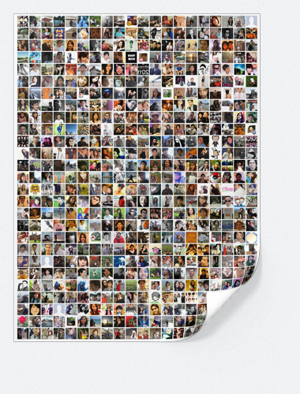

Connect with your Facebook Account
Please connect with your Facebook account in, so we can create your personal poster.
Connect with Facebook
Disclaimer
We only use Facebook Connect to create a list of the profile pictures of your friends. We then print the publicly available profile pictures of your friends on to your FriendlyPoster. We neither forward your data nor do we store any further data.